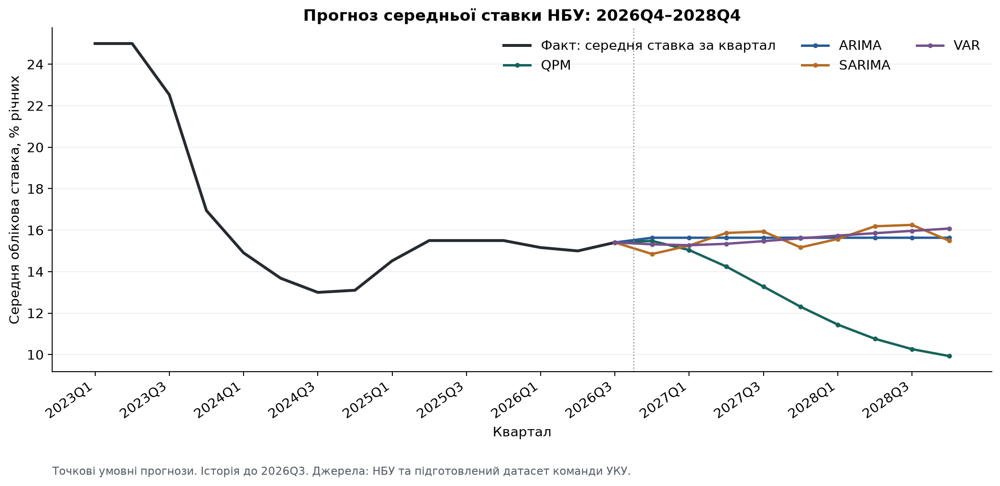
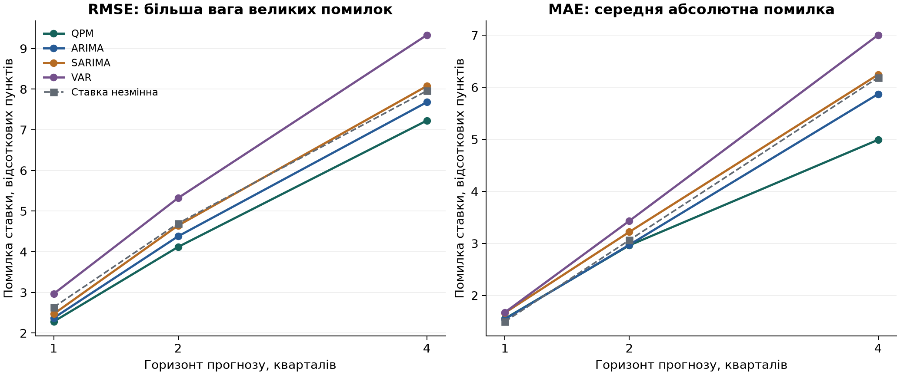
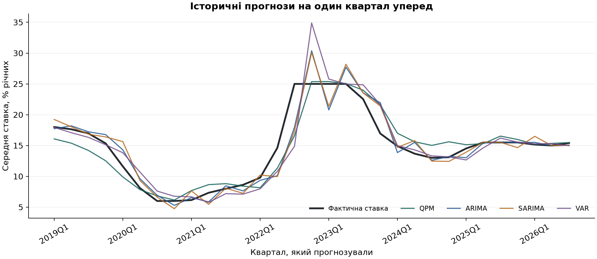

Версія 21.10.2026. Історія показників обрізана вереснем 2026; жовтневі рішення або дані автоматично не додавалися.
Ціль — середня за календарні дні кварталу облікова ставка, % річних. Це не прогноз рішення на найближчому засіданні і не ставка на кінець кварталу.
| model | Квартал | QPM | ARIMA | SARIMA | VAR |
|---|---|---|---|---|---|
| 2026Q4 | 15.48 | 15.64 | 14.85 | 15.32 | |
| 2027Q1 | 15.04 | 15.64 | 15.26 | 15.27 | |
| 2027Q2 | 14.24 | 15.64 | 15.87 | 15.34 | |
| 2027Q3 | 13.28 | 15.64 | 15.93 | 15.47 | |
| 2027Q4 | 12.31 | 15.64 | 15.17 | 15.61 | |
| 2028Q1 | 11.45 | 15.64 | 15.58 | 15.74 | |
| 2028Q2 | 10.76 | 15.64 | 16.19 | 15.86 | |
| 2028Q3 | 10.26 | 15.64 | 16.25 | 15.97 | |
| 2028Q4 | 9.93 | 15.64 | 15.49 | 16.08 |
Це умовні інтервали. Для QPM історичне покриття нижче заявленого.
| Модель | Прогноз, % | Нижня 80% | Верхня 80% | Нижня 95% | Верхня 95% |
|---|---|---|---|---|---|
| QPM | 15.48 | 14.26 | 16.70 | 13.62 | 17.35 |
| ARIMA | 15.64 | 12.83 | 18.44 | 11.35 | 19.92 |
| SARIMA | 14.85 | 11.98 | 17.72 | 10.46 | 19.24 |
| VAR | 15.32 | 12.37 | 18.27 | 10.81 | 19.83 |



| Модель | Кварталів уперед | Кількість прогнозів | MAE, в. п. | RMSE, в. п. | Покриття 80%, частка | Покриття 95%, частка |
|---|---|---|---|---|---|---|
| QPM | 1 | 31 | 1.55 | 2.28 | 0.48 | 0.65 |
| ARIMA | 1 | 31 | 1.54 | 2.37 | 0.81 | 0.87 |
| SARIMA | 1 | 31 | 1.67 | 2.47 | 0.77 | 0.87 |
| VAR | 1 | 31 | 1.68 | 2.97 | 0.84 | 0.90 |
| QPM | 2 | 30 | 2.96 | 4.12 | 0.40 | 0.50 |
| ARIMA | 2 | 30 | 2.97 | 4.38 | 0.77 | 0.97 |
| SARIMA | 2 | 30 | 3.22 | 4.65 | 0.80 | 0.90 |
| VAR | 2 | 30 | 3.43 | 5.32 | 0.73 | 0.90 |
| QPM | 4 | 28 | 4.99 | 7.23 | 0.32 | 0.50 |
| ARIMA | 4 | 28 | 5.87 | 7.68 | 0.71 | 0.89 |
| SARIMA | 4 | 28 | 6.25 | 8.08 | 0.64 | 0.89 |
| VAR | 4 | 28 | 7.01 | 9.33 | 0.75 | 0.86 |
| Кварталів уперед | MAE незмінної ставки, в. п. | RMSE незмінної ставки, в. п. |
|---|---|---|
| 1 | 1.50 | 2.64 |
| 2 | 3.06 | 4.70 |
| 4 | 6.19 | 7.96 |
На IV квартал 2026: QPM 15.48%, ARIMA 15.64%, SARIMA 14.85%, VAR 15.32%.
Останній факт, III квартал 2026: 15.4076%. Повні дев'ять кварталів — у results/2026-10-21/forecast_means.csv та HTML-звіті.
31 старт прогнозу: 2018Q4–2026Q2. На кожному старті доступна історія від 2010Q1.
Горизонти 1, 2, 4 квартали мають відповідно 31, 30, 28 результатів для КОЖНОЇ моделі.
На кожному старті повторно розраховано robust log-STL лише на відомій місячній історії.
ВВП України та єврозони доступний лише до попереднього кварталу. Інформаційний зріз умовно відповідає 21-му дню після завершення кварталу.
Поточні курси, інфляція й ставки доступні за завершений квартал. Це явне наближення до календаря публікацій, а не перевірка кожної історичної дати релізу.
Зовнішні майбутні факти та прогнози НБУ не використовуються як навчальні спостереження.
Показники якості: MAE — середня абсолютна помилка; RMSE сильніше карає великі помилки.
Одиниці обох — відсоткові пункти. Додано орієнтир «майбутня ставка дорівнює останній відомій середній ставці».
QPM має найменшу RMSE на загальній вибірці на всіх трьох горизонтах: 2.28, 4.12, 7.23 в. п.
Її перевага над незмінною ставкою за RMSE — приблизно 13.4%, 12.3%, 9.2%.
На один квартал орієнтир незмінної ставки має MAE 1.50 в. п., що краще за кожну з чотирьох моделей.
Отже, називати QPM безумовним переможцем за всіма критеріями не можна.
На цілях починаючи з 2022 року QPM має найменшу RMSE на 1 і 2 квартали; на 4 квартали ARIMA має RMSE 8.30 проти 8.38 у QPM.
SARIMA не покращила загальний результат проти ARIMA. Підстав вважати, що ставка має корисну для прогнозування сталу річну сезонність, цей тест не дав.
VAR поступається іншим на загальній вибірці; використовувати її як головну модель цей запуск не обґрунтовує.
Це описові результати невеликої вибірки з великими змінами режиму. Статистичної значущості переваги не встановлено.
Модельні Gaussian-інтервали — умовні за фіксованими параметрами. Для QPM 80%-й інтервал на один квартал покрив лише 48.4% фактів.
На чотири квартали — лише 32.1%. 95%-і інтервали також недопокривають. Отже, вони істотно занижують фактичну невизначеність.
У results/2026-10-21/empirical_error_ranges.csv окремо подано описові діапазони за минулими абсолютними помилками для горизонтів 1, 2, 4.
Вони не мають гарантованого майбутнього покриття через зміну режимів та залежність перекривних прогнозів.
Гаусівські довгі інтервали статистичних моделей можуть заходити нижче нуля; межі штучно не обрізалися.
Прочитано 32 початкові лінійні рівняння та параметри з наданого model.model і param.m.
Для лагу інфляційного рівня -4 і очікувань +3 введено 5 допоміжних змінних: 37 станів.
Розв'язок раціональних очікувань отримано лінійною часовою ітерацією; перевірено матричні рівняння, шоки, афінну частину й число стійких узагальнених коренів.
Потім застосовано фільтр Калмана з пропущеними спостереженнями. Прогноз ставки формується всередині структурної системи.
Сталу траєкторію, вплив ставки на попит, ціновий і валютний канали взято з шаблону.
Відмінності від MATLAB/IRIS задокументовані, тому бітової тотожності результатів не заявлено:
- ціни мають дослідницьке STL-коригування, а не X-12/X-13;
- ставка — календарне середнє, дозволене описом джерел шаблону;
- alpha=1, beta=0.7, інфляційна ціль 5, зовнішня 2, інші структурні коефіцієнти — як у шаблоні;
- у param.m назва std_res_dl_cpi_c не відповідає res_dl_cpi; її значення 1 явно зіставлено з цим шоком;
- для потенційного ВВП у 2022Q1–Q2 явно дозволено структурний шок зі стандартним відхиленням 10 логарифмічних пунктів; це припущення нашої адаптації;
- ручні налаштування розриву ВВП 2015/2022 з демонстрації не оголошені фактами й не накладалися;
- початкова коваріація фільтра 100*I, вимірювальний шум 1e-6; це власна ініціалізація;
- розрив ВВП єврозони оцінено HP(1600) на доступній кожному зрізу історії, а не взято як спостережуваний факт;
- зовнішній прогноз створюють AR-рівняння шаблону; заповнених командою зовнішніх траєкторій ще немає.
Структурні коефіцієнти QPM НЕ оцінено економетрично. Шаблон 2026 року застосовано до минулих зрізів ретроспективно.
Фільтр оцінює приховані стани за цією калібровкою; це слід відрізняти від оцінювання коефіцієнтів моделі.
ARIMA: на кожному навчальному зрізі перебрано p=0..2, d=0..1, q=0..1; відкинуто незбіжні оцінки, вибір за AICc.
Поточний вибір: ARIMA(0, 1, 1).
SARIMA: 4 неcезонні та 3 сезонні специфікації, річний період 4; вибір за AICc лише на навчальній історії.
Поточний вибір: (0, 1, 1) × (0, 1, 1, 4).
VAR: 4 показники — зміна ставки, аннуалізована квартальна інфляція, зростання реального ВВП, зміна курсу.
Ставка прогнозується в змінах і повертається в рівень із накопиченням усієї міжперіодної коваріації.
Лаги 1 або 2, не менше 5 спостережень на коефіцієнт рівняння; BIC серед стійких варіантів, за їх відсутності нестійкість явно записується.
Невідоме поточне зростання ВВП оцінюється умовним VAR-прогнозом з урахуванням уже відомих показників, а не заповнюється майбутнім фактом.
Поточний вибір: VAR(1); нестійкі зрізи у фінальному тесті: немає.
Повний знімок підготовленої бази збережено в data/. Програма читає й каталогізує всі 18 підготовлених модельних CSV.
Сім базових спостережень використовує QPM; ARIMA/SARIMA використовують історію ставки; малий VAR — чотири обґрунтовані показники.
Сировина, FAO, зарплата, безробіття, UONIA, кредитні ставки, торгівля й опитування залишаються доступними для контексту та подальших розширень.
Автоматичне додавання всіх цих колонок до малої вибірки спричинило б втрату історії та надмірну кількість параметрів.
results/2026-10-21/data_usage.csv фіксує роль кожної таблиці; results/2026-10-21/auxiliary_context.csv — останні значення й покриття додаткових рядів.
Прогнози НБУ збережені як орієнтир, не підміняють факти та не визначають автоматично наше прогнозне значення ставки.
Історичні ВВП і ціни взято з поточного переглянутого вінтажу. Повного архіву «що саме знали в ту дату» немає.
Майбутні значення й сезонні фактори за межами зрізу не використовувалися; перевірено зміною майбутніх даних.
Затримки ВВП задано правилом, а не відновлено за всіма фактичними календарями публікацій.
Фіксована калібровка QPM походить із навчального шаблону 2026; це теж обмежує трактування результатів як справжнього історичного прогнозування.
Тривалий горизонт до 2028Q4 є умовним сценарієм, особливо за відсутності зовнішніх припущень команди.
Результат прогнозує ставку за моделлю, а не доводить оптимальність цієї ставки для рекомендації НБУ.
- ARIMA: https://www.statsmodels.org/stable/generated/statsmodels.tsa.arima.model.ARIMA.html
- SARIMA: https://www.statsmodels.org/stable/generated/statsmodels.tsa.statespace.sarimax.SARIMAX.html
- VAR: https://www.statsmodels.org/stable/vector_ar.html
- Первинні статистичні джерела та їх точні адреси: data/documentation/sources.csv.